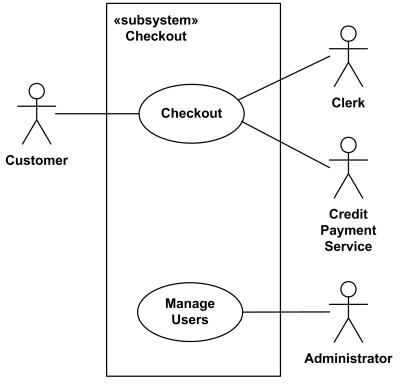

SENG2130/6350 Systems Analysis and Design - Week 3, Lab 1
Note that you should have registered for the lab session which you are attending. If you are not registered for a lab, the demonstrators have every right to ask you to leave the laboratory room. If you have not registered for any lab session, then you should contact the lecturer as soon as possible.
Use Case Diagram
The objectives of this exercise are to familiarise you with creating Use Case diagram in Rational Rose software.
Create Use Case diagram and develop Use Case descriptions based on scenario.
Learning objectives
At the end of this exercise you should be able to produce a fully realised use case diagram that satisfies the requirements set out in the scenario.
Exercise 1 - Course registration
Create a simple Use Case Diagram (no "include" and "extends" relationships) for a course registration system described as follows:The Course registration system should allow students to register for and drop courses. The system's administrator should be able to add and delete courses from the system as well as to cancel planned courses. If a planned course is cancelled the relevant instructor should be notified through the system.
Exercise 2 - Retail sale system
A retail sale system typically includes a computer, monitor, keyboard, barcode, scanners, weight scale, receipt printer, credit card processing system, etc. and a retail sale terminal Software.
Extend the above diagram based on the following information:
Checkout use case involves Customer, Clerk and Credit Payment Service actors and includes scanning items, calculating total and taxes, payment use cases. This is an example of large and complex use case split into several use cases each describing some logical unit of behaviour.
Payment use case is represented using generalization relationship. It means that only one specific type of payment is accepted - either by cash, or by credit, debit, or with check.
Exercise 3 - Online Shopping
1. Create the first level of Use Case Diagram for the online shopping system descripted as follows:
Web Customer (actor) uses some web site to make purchases online. The first level use cases are View Items, Make Purchase, Checkout and Client Register. View Items use case could be used by Web customer if customer only wants to find and see some products. This use case could also be used as a part of Make Purchase use case. Client Register use case allows Web customer to register on the web site, for example to get some coupons or be invited to private sales. Note, that Checkout use case is included use case - checkout is part of making purchase.
Except for the Web Customer actor there are several other actors: Authentification, Identify Provider, Credit Payment Service, and Paypal.
2. Extend the View Item use case based on the following information:
View Items use case is extended by several optional use cases - customer may search for items, browse catalog, view items recommended for him/her, add items to shopping cart or wish list. All these use cases are extending use cases because they provide some optional functions allowing customer to find item
Customer Authentication use case is included in View Recommended Items and Add to Wish List because both require customer to be authenticated. At the same time, item could be added to the shopping cart without user authentication.
3. Extend the Checkout use case based on the following information:
Checkout use case includes several required uses cases. Web customer should be authenticated. It could be done through user login page, user authentication cookie ("Remember me") or Single Sign-On (SSO). Web site authentication service is used in all these use cases, while SSO also requires participation of external identity provider.
Checkout use case also includes Payment use case which could be done either by using credit card and external credit payment service or with PayPal.
Exercise 4 - Library System
Based on the following scenario produce a use case diagram and develop fully developed use cases descriptions for each of the use cases.
This case is a simplified (initial draft) of a new system for the University Library. Of course, the library system must keep track of books. Information is maintained about both book titles and the individual book copies. Book titles maintain information about title, author, publisher, and catalog number. Individual copies maintain copy number, edition, publication year, ISBN, book status (whether it is on the shelf or loaned out), and date due back in.
The library also keeps track of patrons to the library. Since it is a university library, there are several types of patrons, each with different privileges. There are faculty patrons, graduate student patrons, and undergraduate student patrons. Basic information about all patrons is name, address, and telephone number. For faculty patrons, additional information is office address and telephone number. For graduate students, information such as graduate program and advisor information is maintained. For undergraduate students program and total credit hours are maintained.
The library also keeps information about library loans. A library loan is a somewhat abstract object. A loan occurs when a patron approaches the circulation desk with a stack of books to check out. Over time a patron can have many loans. A loan can have many physical books associated with it. (And a physical book can be on many loans over a period of time. Information about past loans is kept in the database.) So, in this case, it is recommended that an association class be created for loaned books.
If a book is checked out that a patron wants, he/she can put that title on reserve. This is another class that does not represent a concrete object. Each reservation is for only one title and one patron. Information such as date reserved, priority, and date fulfilled is maintained.
When it is fulfilled, the system associates it with the loan on which it was checked out.
Patrons have access to the library information to search for book titles and to see whether a book is available. A patron can also reserve a title if all copies are checked out. When patrons bring books to the circulation desk, a clerk checks out the books on a loan. Clerks also check books in. When books are dropped in the return slot, the clerks check them in.
Stocking clerks keep track of the arrival of new books.
The managers in the library have their own activities. They will print out reports of book titles by category. They also like to see (online) all overdue books. When books get damaged or destroyed, they will delete information about book copies. Managers also like to see what books are on reserve.
***Please show your diagram to your demonstrator to discuss when completed.
please email Mira Park if you find any errors on this page.

please email Mira Park if you find any errors on this page.